本網頁的作者不僅是吸血鬼文化的熱衷愛好者，還是深度探討東西方吸血鬼與殭屍題材的專家。多年来，他接觸過大量的吸血鬼作品和殭屍電影，無論是西方經典如《德古拉》、《夜訪吸血鬼》、《刀鋒戰士》、《暮光之城》、《凡赫辛》、《吸血鬼獵人：林肯總統》、《Hotel Transylvania》，還是東方的代表作如《殭屍先生》、《殭屍叔叔》、《音樂殭屍》、《殭屍家族》、《殭屍道長》、《千年殭屍王》，他都在不斷比較與探索。這使他對吸血鬼這一文化象徵有了獨特的理解，並且能夠深入分析這些超自然生物在不同文化中的呈現方式和隱喻意涵。
作為一名前端開發者，作者運用自己的技術背景，將這些文化分析與比較呈現於網頁中。他並不滿足於單純的文字敘述，而是通過結合互動性強的網頁設計和創意排版，將這些吸血鬼與殭屍的知識以更直觀、趣味十足的方式呈現給讀者。他將這一前端作品部署到GitHub Pages，開設專案，將自己的文化研究和技術技能結合，讓更多人可以輕鬆地接觸到這些深入且富有思考的內容。
175公分以上的三千歲吸血鬼族長？考古學與暮光之城的身高落差
目錄
隨便點選下方其中一個主題便能直接跳到該主題的說明區
- 前言
- 在那個時代，歐洲人真的能長到 177 公分嗎？
- 其他沃爾圖里長老的身高與背景
- 亞馬遜家族：薩芙蓮娜（Zafrina）、塞娜（Senna）與卡琪莉（Kachiri）
- 為什麼小說/電影會這樣設定？
- 亞洲視角的反向操作：香港殭屍片中的「東亞裔西方人」
- 結論
前言
在《暮光之城》系列中，權威十足的沃爾圖里族長阿羅（Aro），被設定為一位身高 五呎十吋（177 公分） 的吸血鬼老紳士。
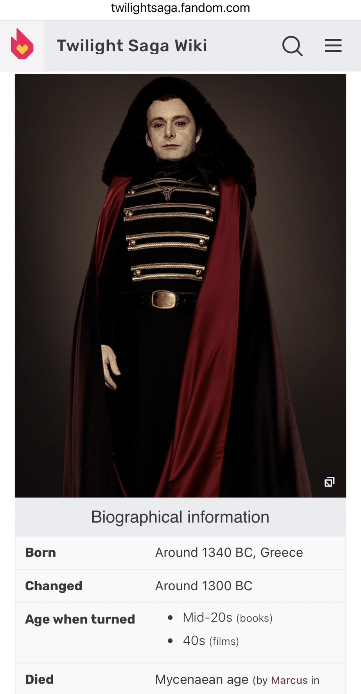
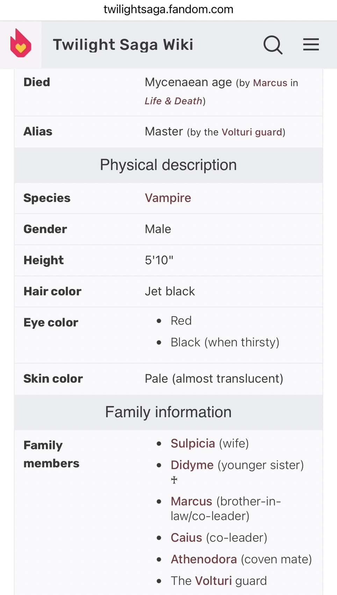
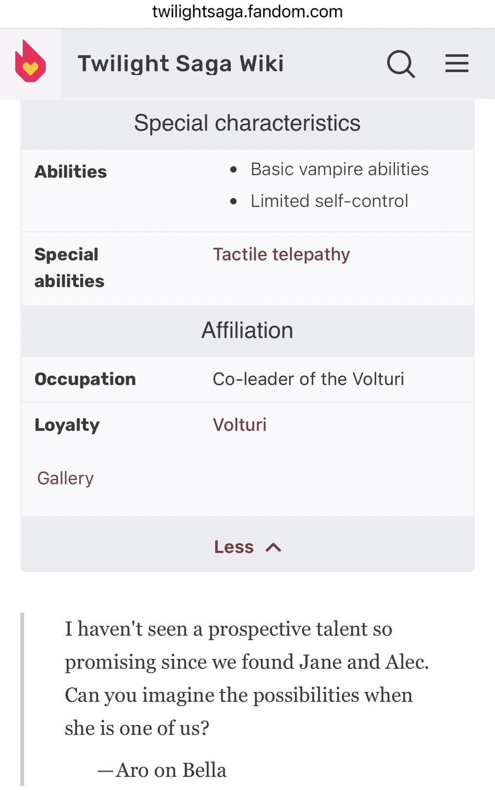
但根據設定，他在還是人類時，是在 公元前1300年左右的歐洲出生的。那麼問題來了：
在那個時代，歐洲人真的能長到 177 公分嗎？
📏 根據考古學數據：
- 公元前1300年屬於青銅時代末期／鐵器時代初期。
- 地中海地區（希臘、義大利）的男性平均身高約為 160～165 公分。
- 北歐地區稍高，也大約 165 公分上下。
- 極少數營養極佳或基因特異的人可能接近 170 公分，但這種情況非常罕見。
也就是說，阿羅若真是公元前1300年的歐洲人，他的 177 公分身高 幾乎等於我們今天看到一個人長到 200 公分那樣罕見。
🧛 其他沃爾圖里長老的身高與背景
除了阿羅，沃爾圖里家族的其他長老也有各自的身高和背景設定：
馬庫斯（Marcus）
馬庫斯是沃爾圖里家族的長老之一，變成吸血鬼的時間是 公元前1331年，在此之前他是古羅馬時期的貴族。
馬庫斯的身高為 六呎（約183公分），這讓他在家族中顯得更為威嚴，與他睿智、冷靜的個性相符。
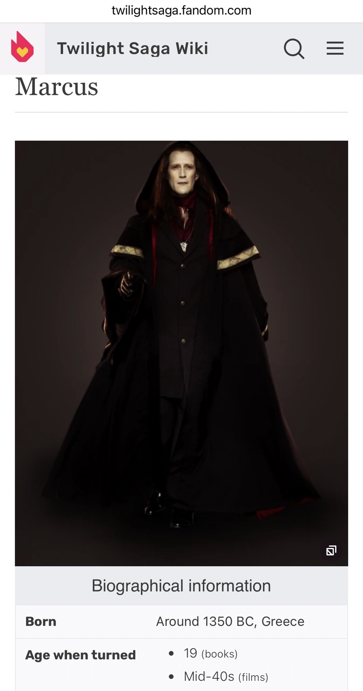

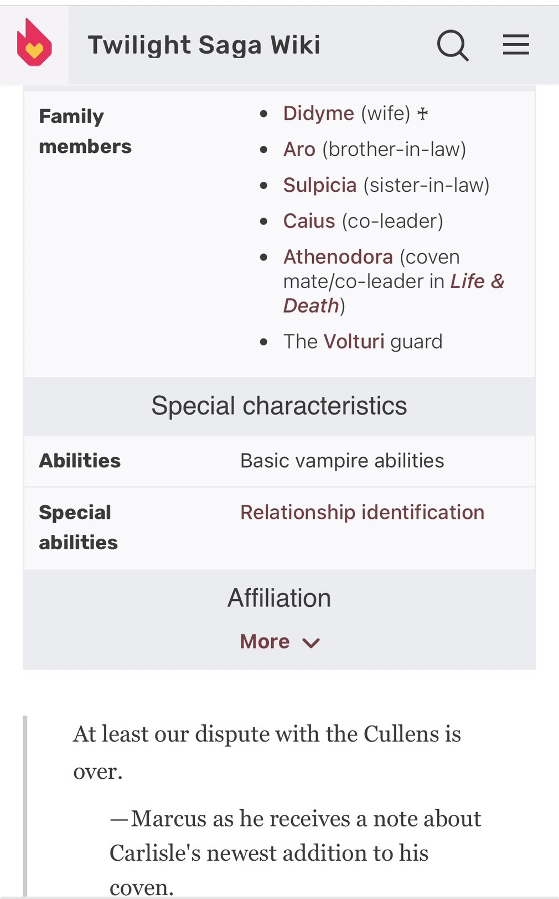
凱厄斯（Caius）
凱厄斯也是沃爾圖里家族的長老，他在 公元前1300年左右 成為吸血鬼。凱厄斯的身高為 五呎九吋（約175.26公分），這與他的性格特徵—衝動和暴躁—有所契合。
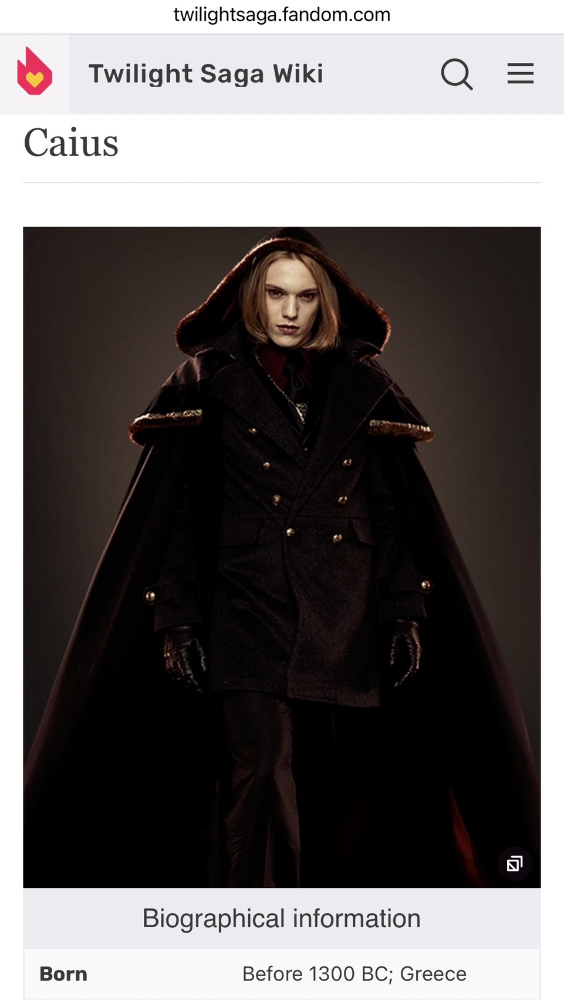
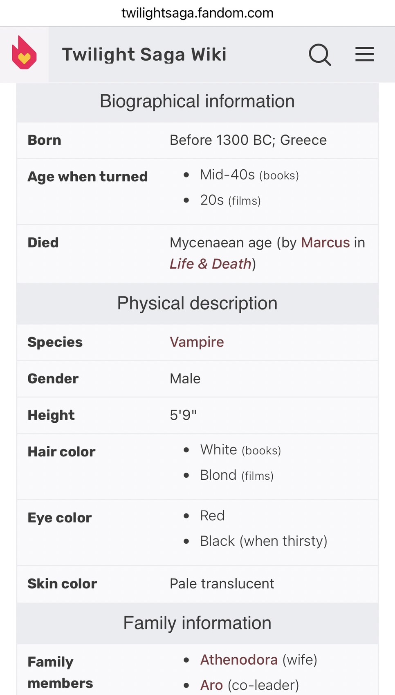
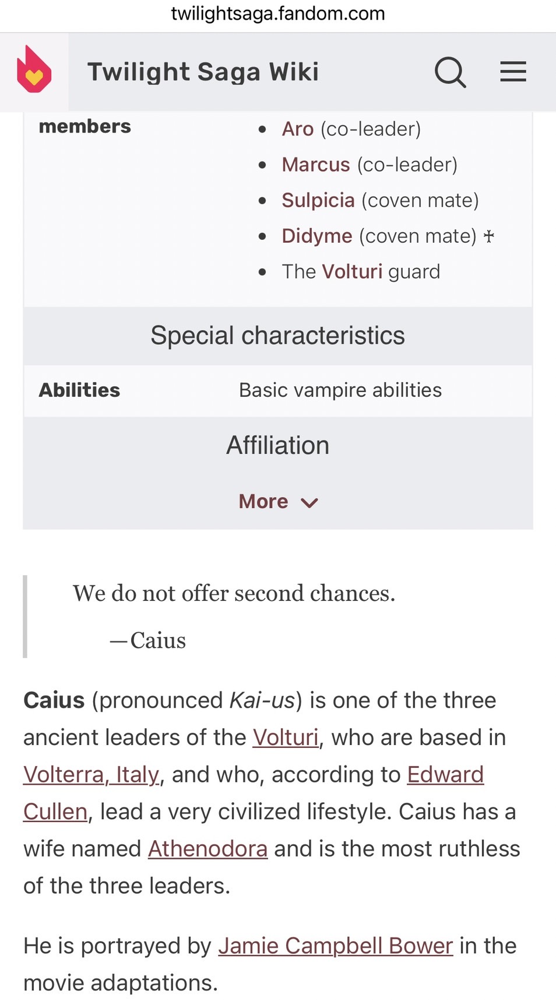
亞馬遜家族：薩芙蓮娜（Zafrina）、塞娜（Senna）與卡琪莉（Kachiri）
除了地中海的古老長老外，更誇張的身高設定出現在南美洲的亞馬遜家族。這三位女性吸血鬼在官方設定集中的身高同樣驚人：
- 塞娜（Senna）： 身高 六呎（約 180 公分）。
- 薩芙蓮娜（Zafrina）： 身高 六呎一吋（約 185 公分），擁有製造視覺幻象的強大能力。
- 卡琪莉（Kachiri）： 身高達到恐怖的 六呎四吋（約 193 公分）（電影中未登場，但為庫倫家族大戰時的重要底牌）。
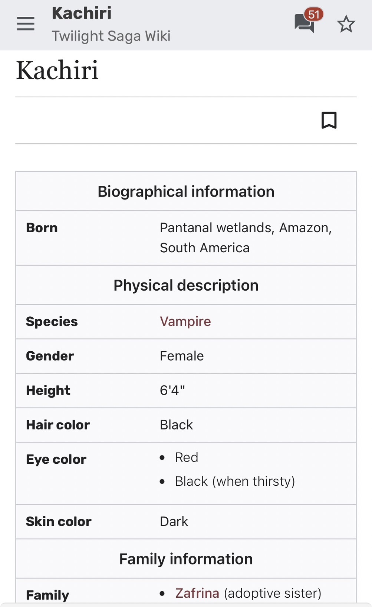
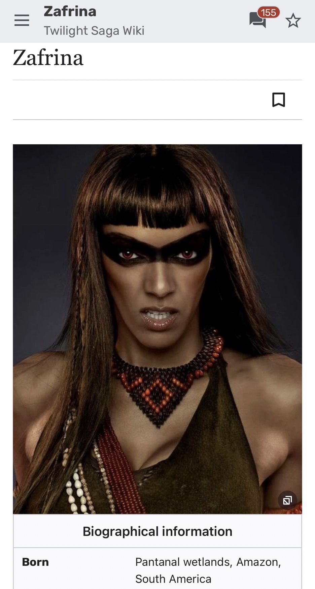
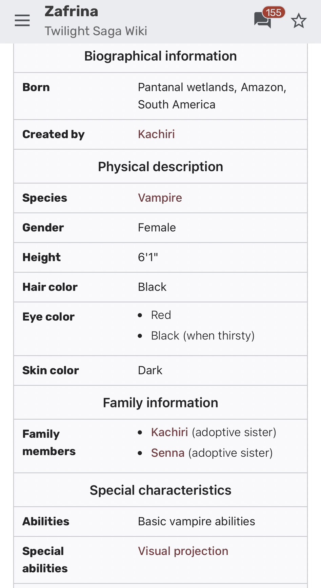
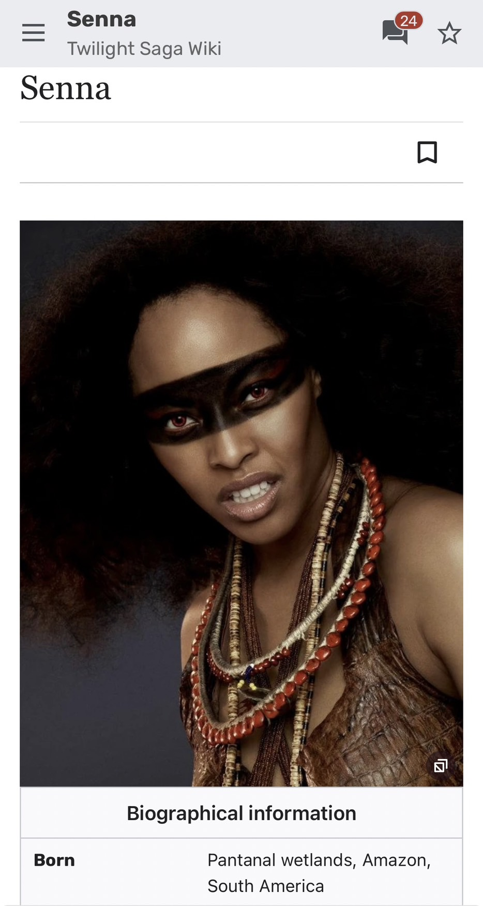
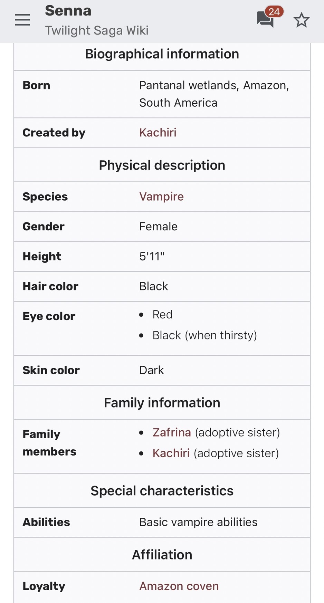
💡 這裡的現實生物學與文化落差：
1. 骨骼定型矛盾： 根據《暮光之城》設定，人類轉變為吸血鬼後身高便無法再改變。這意味著這三位女性在人類時期就必須擁有 180～193 公分的巨人體型。然而，現實中南美洲亞馬遜原住民（如亞諾馬米人）因適應熱帶雨林環境，女性平均身高通常僅在 140～150 公分左右，官方設定完全背離了人類學常識。
2. 張冠李戴的文化挪用： 作者史蒂芬妮·梅爾顯然將「南美洲亞馬遜雨林」與「古希臘神話中的亞馬遜女戰士（Amazons）」混為一談。希臘神話中高大強悍的女戰士屬於白種人語境，與美洲原住民（傳統分類上的黃色人種分支）在血緣與地理上毫無關聯。電影劇組甚至直接找來非裔演員（黑色人種）扮演，形成了流行文化、神話符號與真實歷史的巨大落差。
🧛 為什麼小說/電影會這樣設定？
- 大眾視覺審美至上： 無論是三千年前的地中海人、還是南美洲的原住民，在現代流行文化中，「高挑、精緻、符合現代偏好」的身材與長相，永遠比骨骼發育的現實更具性吸引力與氣場。
- 角色地位與權威的具象化： 身高與體型在影視語境中直接外化為「力量」。不論是統治者的威嚴（沃爾圖里），還是原始獵人的破壞力（亞馬遜家族），高大體型能在一瞬間建立視覺壓迫感。
- 好萊塢的公式化選角與改編：
- 電影中的阿羅由 Michael Sheen 飾演（本人接近 177 公分），劇組便順應演員身高。
- 為了豐富視覺的「多元化」或迎合大眾對異國情調的獵奇想像，劇組甚至會直接忽視族裔的現實生物學特徵。例如：找非裔演員來詮釋基因上接近黃色人種的亞馬遜原住民；或是找高加索長相的拉丁裔演員（如飾演 170 公分納胡爾的 J.D. Pardo，其實際身高約 180 公分），再透過「化妝塗黑」來代替真實的美洲原住民外貌。
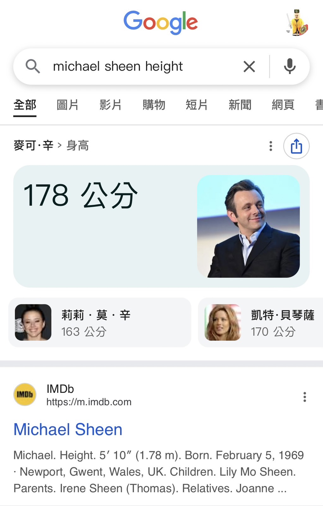
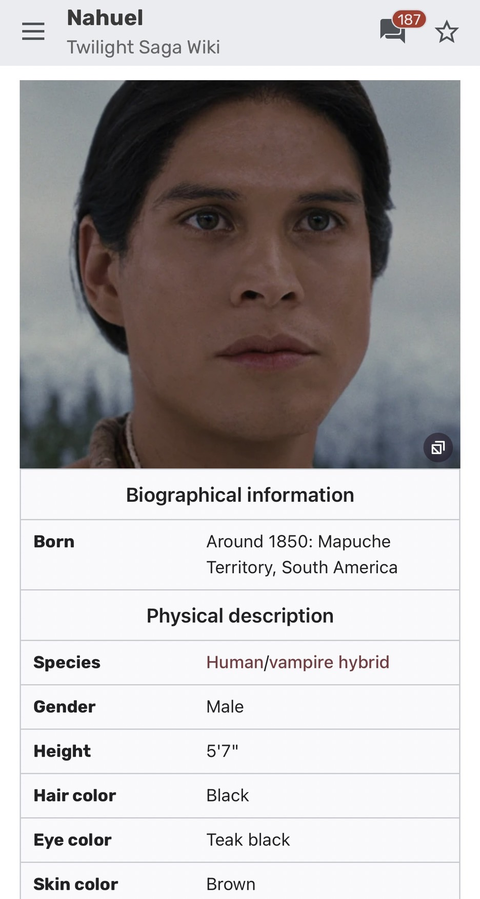
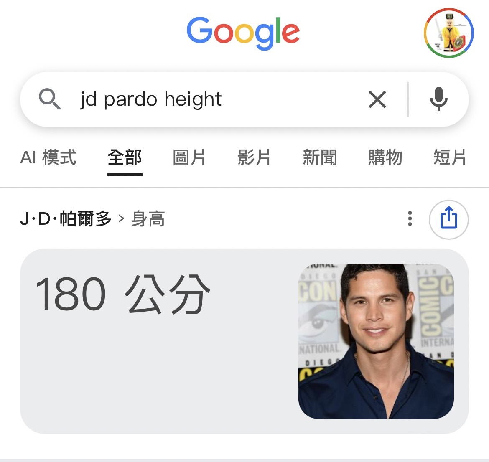
亞洲視角的反向操作：香港殭屍片中的「東亞裔西方人」
這種無視現實生物學與族裔特徵的「跨人種演出」現象，並非好萊塢的專利。在東方（特別是 80、90 年代的香港殭屍電影與電視劇）中，我們也能看到極具時代特色的反向操作：
- 《驅魔道長》中的吳神父（午馬 飾）：
在劇情設定中，吳神父是接受梵蒂岡派遣、千里迢迢來到東方重開教堂的西方神職人員。然而，劇組直接由華人演員午馬飾演。為了掩飾其強烈的東亞人輪廓，劇組讓午馬戴上白色假髮與西方風的白鬍子。這種「只要毛髮對了，人種就對了」的符號化裝扮，正是早期香港電影因應預算與演員限制的趣味妥協。
- 《殭屍道長》中的吸血鬼伯爵（李道洪 飾）：
這位設定上來自羅馬尼亞（東歐白種人語境）的經典西洋吸血鬼，由華人演員李道洪橫跨人種演出。神奇的是，李道洪在臉部特徵上幾乎沒有進行任何特效化妝，直接以純粹的東亞人面孔來呈現這位西方伯爵。特別是他那一頭黑髮的造型，在視覺上反而與大眾印象中東歐吸血鬼（如德古拉經典的黑髮大背頭）的深色色調十分匹配，在沒有改變人種骨骼的情況下，成功靠氣場與造型在東方觀眾心中建立了西方伯爵的威嚴。
💡 東西方「跨人種」的有趣對比：
歐美影視在處理異國角色時，往往喜歡透過「噴霧曬黑」或「跨族裔選角」來滿足對原始/拉丁情調的獵奇想像；而早期的香港電影在處理西方角色時，則傾向於用「局部符號（如假髮、假鬍子）」或「純粹靠演技與氣質硬扛」，讓本土觀眾在熟悉的演員面孔中，快速接受這個角色是「外國人」的設定。這兩者都證明了影視創作中「戲劇效果」往往高於「人類學事實」。
✅ 結論
從《暮光之城》讓公元前 1300 年的地中海人擁有現代超模身高、把希臘神話嫁接到南美雨林，再到香港殭屍片劇組讓華人演員不著痕跡地飾演羅馬尼亞吸血鬼伯爵與梵蒂岡神父，都遵循著一個通俗影視的黃金公式：
角色最終呈現 = 大眾審美 + 視覺張力 + 在地觀眾的文化認同 − 現實生物學與歷史考據
不論是好萊塢的「文化美化」，還是香港電影的「在地化權宜」，歷史真相與虛構角色之間那段被挪移的空間，恰恰是影視文化最迷人的魔幻產物。
你還想知道哪些虛構人物的真實歷史背景？ 歡迎留言告訴我，讓我們一起揭開虛構背後的歷史真相！